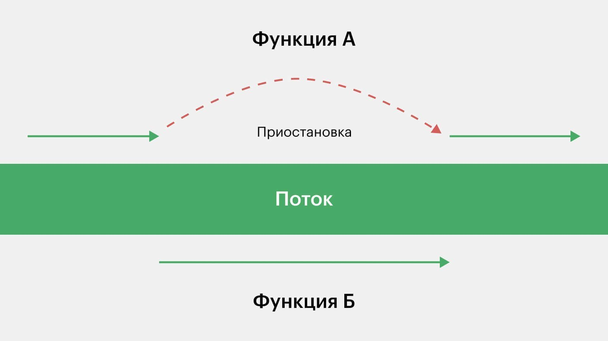

Что такое Kotlin
Kotlin — это язык программирования, созданный в компании JetBrains. Его разработали в 2011 году на замену Java, который в компании считали чересчур многословным. Новый язык получился на 40% компактнее предшественника, что помогло ускорить работу над основным продуктом JetBrains — средой разработки IntelliJ IDEA. При этом Kotlin полностью совместим с Java, потому что запускается на его виртуальной машине (JVM).
Если же давать формальное определение, Kotlin — это объектно-ориентированный язык со статической типизацией. Что это значит?
Объектно-ориентированными называют языки, в которых все операции происходят с объектами — блоками кода, куда можно «складывать» несколько значений. Объектом может быть любая сущность с определённым набором характеристик. Например, персонаж в онлайн-игре или стикер со Спанч Бобом в Telegram. Все объекты проектируются по специальным шаблонам, которые называются классами.
Статическая типизация означает, что типы переменных задаются разработчиком до выполнения программы. Если вы объявили целочисленную переменную, текст в неё поместить уже не получится — компилятор сразу укажет на ошибку. Это замедляет разработку на начальном этапе, но добавляет надёжности.
Кстати, корни теперь уже международной JetBrains — в Санкт-Петербурге. А свой язык они назвали в честь острова в Финском заливе. Помимо намёка на Питер, такое название ещё и подчёркивает связь с Java (и Ява, и Котлин — острова).
История
Язык разрабатывается с 2010 года под руководством Андрея Бреслава, представлен общественности в июле 2011. Исходный код реализации языка открыт в феврале 2012. В феврале выпущен milestone 1, включающий плагин для IDEA. В июне — milestone 2 с поддержкой Android. В декабре 2012 года вышел milestone 4, включающий, в частности, поддержку Java 7.
В феврале 2016 года вышел официальный релиз-кандидат версии 1.0, а 15 февраля 2016 года — релиз 1.0. 1 марта 2017 вышел релиз 1.1.
В мае 2017 года компания Google сообщила, что инструменты языка Kotlin, основанные на JetBrains IDE, будут по стандарту включены в Android Studio 3.0 — официальный инструмент разработки для ОС Android.
На Google I/O 2019 было объявлено, что язык программирования Kotlin стал приоритетным в разработке под Android.
В ноябре 2020 года Бреслав объявил об уходе из JetBrains, руководство разработкой языка было передано Роману Елизарову.
Что можно писать на Kotlin
Потенциально Kotlin можно использовать везде, где работает Java — а это и бэкенд, и веб, и десктоп, и куча других задач. Как говорит Андрей Бреслав, создатель языка, «Kotlin — это язык для всех платформ». И в этом большая доля правды.
Тем не менее у каждого языка есть своя ниша — та сфера, где его используют больше всего программистов. У Kotlin пока их две — это серверная и мобильная разработка. Хотя его всё чаще можно встретить и в других областях — например, в науке и Data Science.
Безопасность
Безопасность — это то, как язык защищает программиста от его собственных ошибок. В языках со статической типизацией, таких как Java и Kotlin, компилятор следит, чтобы не смешивались несовместимые типы данных — например, строка и число.
В Kotlin вшито несколько функций, которые упрощают работу с типами — например, язык может сам привести переменные к единому типу, если того требует логика кода. Эта функция называется smart cast, или «умное преобразование».
Корутины
Coroutines (корутины) — это средство, которое обеспечивает параллелизм, чтобы программа могла выполнять несколько операций одновременно. Когда возникает необходимость, выполнение одной функции приостанавливается с сохранением данных, и начинает работать другая функция.

Допустим, нам нужно сделать приложение — электронный дневник, чтобы ученик мог зайти в него, узнать свои оценки и посмотреть, что задали.
Если загружать с сервера все данные последовательно, то приложение будет открываться очень долго. Вместо этого ненужные пока данные (например, новости), можно вынести в корутину и поставить их подгрузку на паузу, пока грузится основной интерфейс.
Корутины позволяют расставить приоритеты в работе программы. Этот механизм напоминает многопоточность, но тратит меньше ресурсов процессора — за что их и ценят, например, в мобильной разработке.
Что нужно новичку
Требования работодателей к новичкам сильно зависят от ниши. Если метите в бэкенд, изучите фреймворки Kotlin для работы с сервером: например, Spring, Ktor и Vert.x. Плюсом к ним надо будет освоить протокол HTTP, форматы XML и JSON, научиться работать с SQL-запросами и одной из популярных баз данных — например, PostgreSQL.
Для разработки под Android джуну нужно знать Android SDK, уметь работать в Git и Android Studio (и/или IntelliJ IDEA), понимать, как устроены корутины и многопоточность. Ещё с вас обязательно спросят и паттерны проектирования: MVC, MVP и MVVM.
Если хотите научиться программировать, но чувствуете, что не хватит времени или терпения, поищите курсы с опытными преподавателями. Так вы точно не собьётесь с пути и уже сейчас начнёте работать в команде.